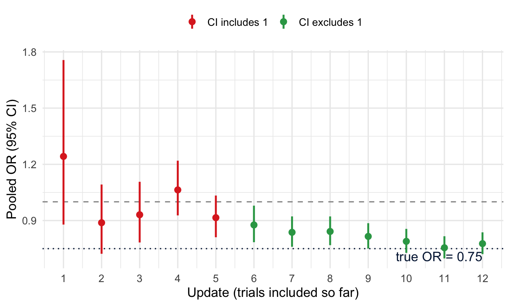
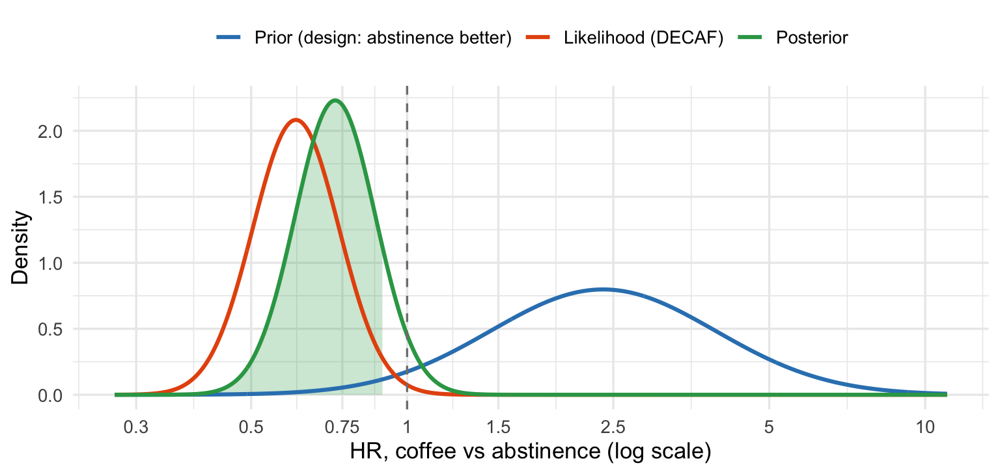

describe what distinguishes a Cochrane review, and explain why the label guarantees a process rather than a correct conclusion;
explain why repeatedly updated (living) reviews need methods for repeated looks, and why Bayesian updating is a natural one;
calculate the power, Type S and Type M errors of a completed trial, and explain the “winner’s curse”;
combine a single trial with a prior as a two-study meta-analysis, on the relative and absolute scales, and report how the conclusion depends on the prior;
use an empirical Bayes prior estimated from Cochrane trials to calibrate a surprising result.
R packages:dplyr, tidyr, purrr, ggplot2, metafor, knitr; brms for code shown but not run here (its posterior draws are read from a file).
This chapter covers three evidence situations. In the first, many trials have been synthesised, often by Cochrane. In the second, trials keep arriving and the review must keep up. In the third, there is only one trial, and its result is surprising. The common thread is that every conclusion combines new data with what was already known, explicitly or not; the last part of the chapter shows how to do it explicitly.
21.1 Cochrane reviews
Cochrane, founded in 1993 and named after Archie Cochrane, publishes systematic reviews in the Cochrane Database of Systematic Reviews and maintains CENTRAL, the largest register of controlled trials (Chapter 2). A Cochrane review starts from a peer-reviewed, published protocol; searches extensively, including trial registries and unpublished sources; screens and extracts in duplicate; assesses risk of bias with RoB 2 or ROBINS-I and certainty with GRADE; accepts no commercial funding for individual reviews; and is meant to be updated. For 30 years reviews were produced by topic-based Cochrane Review Groups. UK government (NIHR) funding of those groups ended in March 2023, and Cochrane moved to a central editorial service.
Does the label help? Jørgensen and colleagues matched 24 Cochrane reviews with other meta-analyses of the same two drugs (1). The Cochrane reviews had higher methodological quality (median score 7 vs 3 on a 7-point scale). All seven industry-supported reviews that stated conclusions recommended the experimental drug without reservation, and none of the matched Cochrane reviews did; yet the pooled effect estimates were similar on average. The difference lay in how the same numbers were turned into conclusions.
The label is not a guarantee. Reviews go out of date: in a survival analysis of 100 reviews, the median time until new evidence changed, or should have changed, the conclusions was 5.5 years, and 7% were already out of date when published (2). And the appraisal tools of earlier chapters still apply, whoever wrote the review: AMSTAR 2 for the review (Section 7.2), and the search date and GRADE certainty for each outcome (3). Three well-known cases show different ways a careful review can still mislead.
Oseltamivir (Tamiflu): incomplete data. Early reviews relied on manufacturers’ summaries of mostly unpublished trials. Once full clinical study reports were obtained, the 2014 review found no clear reduction in hospital admission or complications (4) (Chapter 15). A sound method applied to incomplete data still misleads.
Masks: misread conclusions. The 2023 review of physical interventions against respiratory viruses (5) was widely reported as showing that “masks don’t work”. Cochrane’s Editor-in-Chief issued a statement calling that interpretation inaccurate: the review had found the effect of promoting mask wearing inconclusive. “No clear evidence of an effect” is not “evidence of no effect”.
Mammography: disputed judgements. The Cochrane review of screening judged several large trials inadequately randomised and concluded that benefits were smaller, and over-diagnosis larger, than generally believed (6). Screening experts disputed those risk-of-bias judgements. Inclusion and risk-of-bias decisions are judgements, and they can drive the conclusion.
21.2 Living systematic reviews
A living systematic review is continually updated: searches run regularly and new trials are added as they appear (7). Many were published during the COVID-19 pandemic, some updated monthly. They are worth their cost when the question is a priority, new trials are appearing, and those trials could change the conclusion.
Re-testing at p < 0.05 after each new trial is repeated significance testing, and the chance of a false “significant” result somewhere along the way is well above 5%. Even with a treatment that works, the conclusion can flip back and forth:
Code
set.seed(42)true_or <-0.75; n_trials <-12trial_n <-sample(80:400, n_trials)trial_se <-sqrt(4/ trial_n) # approximate SE of a log ORtrial_y <-rnorm(n_trials, log(true_or), 0.25) # observed log ORscumulative <-map_dfr(1:n_trials, function(k) { m <-rma(trial_y[1:k], sei = trial_se[1:k], method ="EE") tibble::tibble(update = k, pooled =exp(coef(m)), lo =exp(m$ci.lb), hi =exp(m$ci.ub),sig = m$ci.ub <0)})ggplot(cumulative, aes(update, pooled, colour = sig)) +geom_hline(yintercept =1, linetype =2, colour ="grey60") +geom_hline(yintercept = true_or, linetype =3, colour ="#041E42") +geom_linerange(aes(ymin = lo, ymax = hi), linewidth =0.9) +geom_point(size =2.5) +annotate("text", x =12, y = true_or -0.04, label ="true OR = 0.75", hjust =1, colour ="#041E42") +scale_colour_manual(values =c(`FALSE`="#de2d26", `TRUE`= clr_post),labels =c("CI includes 1", "CI excludes 1"), name =NULL) +scale_x_continuous(breaks =1:12) +labs(x ="Update (trials included so far)", y ="Pooled OR (95% CI)") +theme(legend.position ="top")

Figure 21.1: A simulated living review: 12 trials of a treatment with a true OR of 0.75, pooled (common effect) after each new trial. Whether the 95% CI excludes 1 changes from one update to the next.
Stopping at the first update whose interval excludes 1, or declaring “no effect” while it includes 1, would both be premature. There are two remedies. Trial sequential analysis, borrowed from interim monitoring of trials, uses stricter significance boundaries until enough information has accumulated. Bayesian updating treats today’s posterior as tomorrow’s prior and reports at each update the probability of a meaningful effect, which is a statement about the strength of evidence rather than about crossing a threshold. The rest of this chapter applies the same logic, prior plus new data gives posterior, to a single trial.
21.3 Only one trial: the DECAF example
Caffeine has long been regarded as proarrhythmic, and patients with atrial fibrillation (AF) are often told to avoid coffee. In the DECAF trial, 200 coffee drinkers with persistent AF or flutter who were having cardioversion were randomised to continue caffeinated coffee (about one cup a day) or to abstain from all caffeine for six months (8). The trial was open label. Recurrence of AF or flutter occurred in 47 of 100 patients who continued coffee and 64 of 100 who abstained: hazard ratio (HR) 0.61 (95% CI 0.42 to 0.89), p = 0.01. The result was widely reported as showing that coffee protects against AF.
It was surprising for three reasons. It contradicted clinical belief. The prior evidence suggested no large effect either way: a crossover trial in 100 ambulatory adults found no increase in atrial ectopy on caffeinated days (rate ratio 1.09, 95% CI 0.98 to 1.20) (9), and a meta-analysis of observational studies found no association with incident AF (pooled RR 0.98, 95% CI 0.88 to 1.09) (10). And the trial was designed to detect the opposite: 80% power for a 41% relative reduction in recurrence with abstinence, from 50% to 29.5%. The paper does not state which arm was expected to do better, but the power calculation, the population (coffee drinkers randomised to abstinence) and the clinical tradition all point to abstinence. An undeclared direction is one of the researcher degrees of freedom that let a result be interpreted after the data are seen (11).
How should a single surprising trial change what we believe? A meta-analysis combines several sources of evidence weighted by their precision. With one trial, the other source is external evidence, written as a prior distribution. We take three approaches: a frequentist critique of the design, a prior based on the trial’s own design, and an empirical prior based on thousands of trials.
Code
HR <-0.61; CI_lo <-0.42; CI_hi <-0.89y_obs <-log(HR) # observed log HR, coffee vs abstinencese <- (log(CI_hi) -log(CI_lo)) / (2*qnorm(0.975)) # its standard errorz_obs <- y_obs / seround(c(log_HR = y_obs, se = se, se_from_events =sqrt(1/47+1/64), z = z_obs), 3)
log_HR se se_from_events z
-0.494 0.192 0.192 -2.580
The standard error from the confidence interval agrees with the approximation \(\text{Var}(\log HR) \approx 1/E_1 + 1/E_2\) from the 47 and 64 events. With equal arms, \(s^2 \approx 4/E\), so the precision of a trial is set by its number of events, here about 109.
21.4 Frequentist design critique: Type S and Type M errors
Suppose the truth is a realistic, still worthwhile 15% relative reduction (50% to 42.5%, a risk difference of 7.5 percentage points) and we run many DECAF-sized trials.
Figure 21.2: Risk differences in 10,000 simulated trials with 100 patients per arm and a true difference of −7.5 percentage points (green line). Trials reaching p < 0.05 are in purple; DECAF’s observed difference is the dashed line.
With 100 patients per arm, the standard error of a risk difference is about 0.07, so the true effect is only about 1.1 standard errors from zero. A trial reaches significance only when chance adds almost another standard error in the right direction, which happens in 20% of trials: that is the power. The significant trials are, by construction, those in which chance exaggerated the effect; their average absolute difference is 17.3 percentage points, about 2.3 times the truth. This is the winner’s curse(12).
Gelman and Carlin named the two errors that follow from low power (13). Among results that reach significance, a Type S (sign) error is an estimate in the wrong direction, and a Type M (magnitude) error, or exaggeration ratio, is the expected ratio of the estimate to the true effect. Both depend only on the ratio of the true effect to the standard error, and they can be calculated without simulation:
Code
retrodesign <-function(A, s, alpha =0.05, n.sims =1e5) { z <-qnorm(1- alpha /2) p.hi <-1-pnorm(z - A / s) # significant, correct sign p.lo <-pnorm(-z - A / s) # significant, wrong sign power <- p.hi + p.lo est <- A + s *rnorm(n.sims) # replicate estimates sig <-abs(est) > s * zc(power = power, type_s = p.lo / power, type_m =mean(abs(est[sig])) / A)}s_design <-sqrt(0.5*0.5/100+0.425*0.575/100)set.seed(1)retro <-rbind(`Design: RD 20.5%`=retrodesign(0.205, s_design),`Realistic: RD 7.5%`=retrodesign(0.075, s_design))round(retro, 2)
DECAF had 80% power only for an absolute reduction of 20.5 percentage points, larger than almost any cardiovascular intervention achieves. For a realistic 7.5-point difference its power was about 19%, and a significant result would on average overstate the effect 2.3-fold. DECAF’s observed difference of 17 points is therefore quite compatible with a true effect less than half that size.
21.5 Combining the trial with a prior
21.5.1 Normal prior and normal likelihood: a two-study meta-analysis
With the trial summarised as \(\hat\theta \sim N(\theta, s^2)\) on the log-HR scale and a prior \(\theta \sim N(m_0, s_0^2)\), the posterior is normal with
a precision-weighted average: exactly a common-effect meta-analysis with the prior as a second “study” (Chapter 13).
What prior? The investigators’ own design assumptions are a ready-made, pre-specified choice. They assumed 50% recurrence with coffee and 29.5% with abstinence. On the log odds ratio scale, coffee versus abstinence, that is \(\log\{(0.5/0.5)/(0.295/0.705)\} = 0.871\): centred on harm from coffee. The SD is a judgement. With \(s_0 = 0.5\), the prior’s 95% range for the ratio is 0.90 to 6.37, the prior probability that coffee is beneficial is 4.1%, and, inverting \(s^2 \approx 4/E\), the prior carries the information of a trial with about 16 events (14).
Code
m0 <-0.871; s0 <-0.5w0 <-1/ s0^2; w <-1/ se^2m1 <- (w0 * m0 + w * y_obs) / (w0 + w); s1 <-sqrt(1/ (w0 + w))ma <-rma(yi =c(m0, y_obs), sei =c(s0, se), method ="EE") # the same, as a meta-analysisrbind(closed_form =exp(c(m1, m1 -1.96* s1, m1 +1.96* s1)),rma =exp(c(ma$b, ma$ci.lb, ma$ci.ub))) |>round(2) |>`colnames<-`(c("HR", "lower", "upper"))
th <-seq(-1.3, 2.4, length.out =800)dd <-bind_rows( tibble::tibble(th, d =dnorm(th, m0, s0), what ="Prior (design: abstinence better)"), tibble::tibble(th, d =dnorm(th, y_obs, se), what ="Likelihood (DECAF)"), tibble::tibble(th, d =dnorm(th, m1, s1), what ="Posterior")) |>mutate(what =factor(what, levels =unique(what)))ggplot(dd, aes(th, d, colour = what)) +geom_area(data =filter(dd, what =="Posterior", th <log(0.9)), aes(th, d),fill = clr_post, alpha =0.25, colour =NA, inherit.aes =FALSE) +geom_line(linewidth =1.1) +geom_vline(xintercept =0, linetype =2, colour ="grey50") +scale_colour_manual(values =c(clr_prior, clr_lik, clr_post), name =NULL) +scale_x_continuous(breaks =log(c(0.3, 0.5, 0.75, 1, 1.5, 2.5, 5, 10)),labels =c(0.3, 0.5, 0.75, 1, 1.5, 2.5, 5, 10)) +labs(x ="HR, coffee vs abstinence (log scale)", y ="Density") +theme(legend.position ="top")

Figure 21.3: Design prior (centred on harm from coffee), DECAF likelihood, and posterior for the HR of coffee versus abstinence. Shaded: P(HR < 0.9).
The trial is about 7 times as precise as the prior, so the posterior, HR 0.73 (95% CrI 0.51 to 1.03), lies close to the data. Benefit remains probable, P(HR < 1) = 0.96, but the evidence is more modest than p = 0.01 suggests.
21.5.2 The absolute scale
Patients and clinicians think in absolute risks. A binomial model for the two arms puts a prior on the logit risk with coffee, \(a \sim N(0, 1.5^2)\) (centred on the design’s 50%, with a 95% range of 5% to 95%), and the same design prior on the log odds ratio for abstinence versus coffee, \(b \sim N(-0.871, 0.5^2)\). The risk difference, coffee minus abstinence, is \(\text{plogis}(a) - \text{plogis}(a + b)\). With two parameters there is no closed form, so the model is fitted with brms:
Code
library(brms)decaf <- tibble::tibble(abst =c(0, 1), events =c(47, 64), n =c(100, 100))pri_rd <-c(prior(normal(0, 1.5), class = b, coef = Intercept),prior(normal(-0.871, 0.5), class = b, coef = abst))fit_rd <-brm(events |trials(n) ~0+ Intercept + abst, data = decaf, family = binomial,prior = pri_rd, chains =4, iter =6000, warmup =1000, seed =2026)draws <-as_draws_df(fit_rd)[, c("b_Intercept", "b_abst")]
The 20,000 posterior draws from that fit are stored with the book:
The trial alone gives a risk difference of −17 percentage points (95% CI −31 to −3). With the design prior it is -7.7 points (95% CrI -19.2 to +4.1). The probability of any benefit from coffee is 0.90; of a benefit of at least 2 points (a number needed to treat of 50 or fewer), 0.83. As a frequentist cross-check, dividing −17 by the Type M ratio for a realistic effect gives about -7.2 points, similar to the Bayesian estimate. Both rest on an assumption about plausible effect sizes: the Type M correction states it as a true effect, the Bayesian analysis as a prior.
21.5.3 How much does the prior matter?
Code
post_norm <-function(m0, s0) { w0 <-1/ s0^2; m <- (w0 * m0 + w * y_obs) / (w0 + w); s <-sqrt(1/ (w0 + w)) tibble::tibble(post_hr =exp(m), post_lo =exp(m -1.96* s), post_hi =exp(m +1.96* s),p1 =pnorm(0, m, s), p08 =pnorm(log(0.8), m, s))}hr_design <-log(1-0.295) /log(1-0.50) # abstinence vs coffee, proportional hazardssens <- tibble::tibble(Prior =c("1. Vague: N(0, 10²)", "2. Sceptical: N(0, 0.5²)",sprintf("3. Design as an HR: N(%.3f, 0.5²)", log(1/ hr_design)),"4. Design as an OR: N(0.871, 0.5²)", "5. Design, held firmly: N(0.871, 0.25²)"),m0 =c(0, 0, log(1/ hr_design), 0.871, 0.871), s0 =c(10, 0.5, 0.5, 0.5, 0.25)) |>mutate(prior_p1 =pnorm(0, m0, s0), post =map2(m0, s0, post_norm)) |>unnest(post)sens |>transmute(Prior, `Prior P(HR < 1)`=sprintf("%.2f", prior_p1),`Posterior HR (95% CrI)`=sprintf("%.2f (%.2f to %.2f)", post_hr, post_lo, post_hi),`P(HR < 1)`=sprintf("%.2f", p1), `P(HR < 0.8)`=sprintf("%.2f", p08)) |>kable(align ="lcccc")
Table 21.1: DECAF combined with five priors for the HR of coffee versus abstinence (normal approximation).
Prior
Prior P(HR < 1)
Posterior HR (95% CrI)
P(HR < 1)
P(HR < 0.8)
1. Vague: N(0, 10²)
0.50
0.61 (0.42 to 0.89)
1.00
0.92
2. Sceptical: N(0, 0.5²)
0.50
0.65 (0.46 to 0.92)
0.99
0.88
3. Design as an HR: N(0.685, 0.5²)
0.09
0.71 (0.50 to 1.01)
0.97
0.75
4. Design as an OR: N(0.871, 0.5²)
0.04
0.73 (0.51 to 1.03)
0.96
0.70
5. Design, held firmly: N(0.871, 0.25²)
0.00
1.01 (0.75 to 1.36)
0.47
0.06
A vague prior recovers the trial. A sceptical prior centred on no effect pulls the estimate to 0.65. The two versions of the design prior, which give coffee little prior chance of benefit, leave a posterior that still favours coffee; only a firmly held design prior removes the benefit (P(HR < 1) = 0.47). The probability of a large benefit, P(HR < 0.8), is the quantity most sensitive to the prior, ranging from 0.92 to 0.06. A single trial should be reported with its posterior under a range of defensible priors.
21.6 An empirical Bayes prior from Cochrane trials
A trial-specific prior needs subject-matter judgement. An alternative asks what effects trials usually find. To compare trials of different outcomes and sizes, work on the signal-to-noise ratio scale: SNR = θ/s, and the observed \(z = \hat\theta / s \sim N(\text{SNR}, 1)\). For DECAF, z = -2.58.
Van Zwet and colleagues fitted the z-values of 23,551 RCTs from the Cochrane Database as a mixture of four normal distributions centred at 0 (15). Since each observed z is the true SNR plus noise with SD 1, the SD of the true SNRs in each component is \(\sqrt{\text{SD}_z^2 - 1}\). Most trials have small true effects; a few have large ones. One consequence is that the median power of a Cochrane trial against its own true effect is only about 13%, far below the 80% to 90% assumed at the design stage (16).
The posterior for DECAF’s SNR reweights each mixture component by how well it predicts the observed z, and then shrinks z within each component by \(B_k = s_k^2/(s_k^2 + 1)\), the normal-normal shrinkage of Section 21.5.1.
Code
sd_z <-c(1.17, 1.74, 2.38, 5.73); p_mix <-c(0.32, 0.31, 0.30, 0.07)sd_snr <-sqrt(sd_z^2-1) # remove the unit noisepost_w <- p_mix *dnorm(z_obs, 0, sd_z); post_w <- post_w /sum(post_w)Bk <- sd_snr^2/ (sd_snr^2+1)set.seed(2026); N <-2e5comp <-sample.int(4, N, TRUE, post_w)snr_EB <-rnorm(N, Bk[comp] * z_obs, sqrt(Bk[comp]))hr_EB <-exp(snr_EB * se) # back to the HR scalerbind(prior_weight = p_mix, sd_true_snr = sd_snr, posterior_weight = post_w, shrinkage_B = Bk) |>round(2) |>`colnames<-`(paste0("k=", 1:4))
The observed z of -2.58 is shrunk to -1.79, which corresponds to p ≈ 0.07. The HR becomes 0.71 (95% CrI 0.49 to 1.00): benefit is still probable, P(HR < 1) = 0.98, but a large benefit is far from certain. This prior says nothing about coffee. Its posterior has a frequency interpretation: among trials like DECAF that observed this z, this is how their true effects are distributed. It assumes that DECAF is exchangeable with a typical Cochrane trial.
The same machinery gives Type S, Type M and the chance that a same-size replication would be significant in the same direction, under each prior:
Table 21.2: DECAF under four priors on the signal-to-noise scale. Type S: posterior probability that the true effect is on the other side of 1. Type M: median factor by which |z| overstates the true |SNR|. Replication: probability that a same-size repeat is significant in the same direction.
Prior on SNR
Posterior HR (95% CrI)
Type S
Type M
Replication
Empirical Bayes (Cochrane)
0.71 (0.49 to 1.00)
0.024
1.45
0.45
Vague N(0, 10²)
0.61 (0.42 to 0.89)
0.005
1.01
0.66
Sceptical N(0, 1²)
0.78 (0.60 to 1.02)
0.034
2.00
0.29
Design prior
0.73 (0.51 to 1.03)
0.037
1.54
0.41
Two quite different priors, one built from the investigators’ expectation of harm and one from the record of 23,551 trials, lead to the same qualitative conclusion: probable but modest benefit, with an interval that includes no effect, and a replication of the same size would more often than not fail. Agreement across defensible priors is what makes a conclusion robust. Surprising single trials are not rare; several recent trials in major journals contradicted their own power calculations (17).
Key points
The Cochrane label signals a rigorous process, not a correct conclusion; check the search date, the completeness of the data and the GRADE certainty.
Similar effect estimates can be turned into very different conclusions.
Living reviews need methods for repeated looks; Bayesian updating, which reports the strength of evidence at each update, is a natural one.
A single trial is still a meta-analysis problem: the trial plus a prior.
With low power, significant results are exaggerated (Type M); retrospective design analysis quantifies by how much.
Report probabilities of clinically meaningful effects, on the absolute scale, under several defensible priors.
An empirical Bayes prior from many trials calibrates a surprising result without subject-matter judgement, assuming the trial is typical.
Exercises
Re-run fig-sigfilter with 400 patients per arm. What are the power and the Type M ratio now?
Which prior SD for the design prior makes P(HR < 1) equal 0.5? How many “events” would that prior represent?
Using retrodesign(), find the smallest true risk difference DECAF had 50% power to detect.
Apply the empirical Bayes calculation to a trial you know with z = 3. How much is it shrunk?
Find a recent “surprising” trial in a major journal and repeat this chapter’s analysis with its published HR and CI.
Gelman A, Loken E. The garden of forking paths: Why multiple comparisons can be a problem, even when there is no “fishing expedition” or “p-hacking” and the research hypothesis was posited ahead of time [Internet]. Unpublished manuscript, Department of Statistics, Columbia University; 2013. Available from: http://www.stat.columbia.edu/~gelman/research/unpublished/forking.pdf